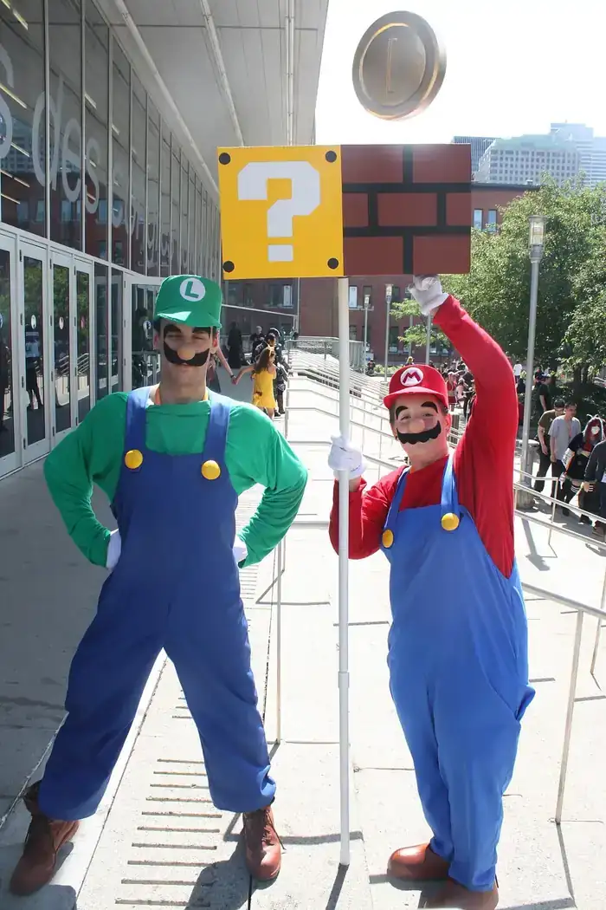
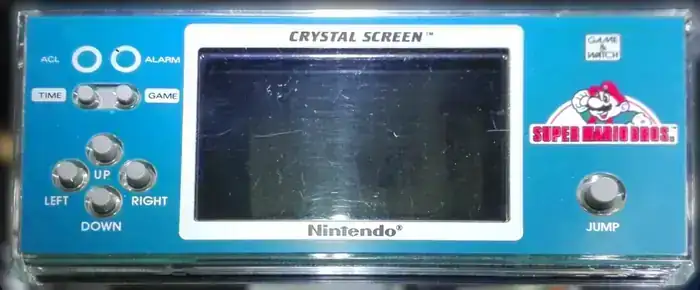
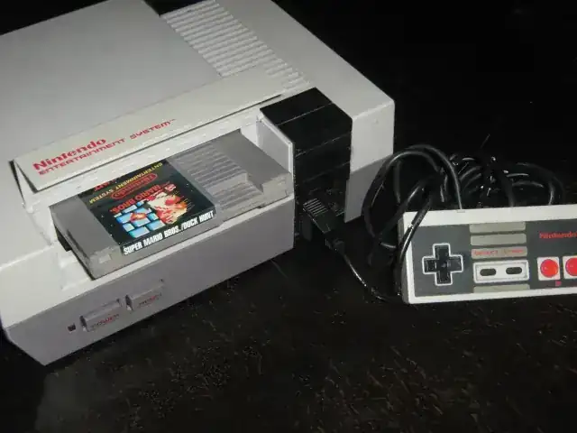

The theory
The theory points to details in Super Mario Bros. 3: the game opens with a curtain rising, the ground blocks appear to be bolted to the backdrop, some platforms hang from the ceiling, and the level ends with a card flip. On this reading, the whole game is a stage performance.
Maps, diagrams and images






The answer
The observation about staging is accurate — the game's designers used theatrical framing deliberately. The conclusion that the game is therefore a play within a fiction is a reading, not a fact, and the developers have described the aesthetic as a stylistic choice for a game that was already self-consciously theatrical.
The archive files it as documented rather than fiction because the phenomenon — a fan reading of deliberate design — is documented, and the reading is presented as interpretation by its authors.
Documented: the theatrical design elements.
Documented: the fan theory and its arguments.
Documented: the developers' description of the aesthetic.
Not established: a hidden narrative.
The label: documented, as a reading.
Why it is in the archive
Because it is a case where the observation is right and the conclusion is optional, which is the distinction the whole archive runs on.
Open resources on this topic
- PapersOpen-access articles: DOAJ · PubMed Central · Internet Archive Scholar
- BooksPublic-domain and borrowable copies: Open Library · Project Gutenberg · Google Books · Internet Archive
Cite this page
Momin, S. (2026). Mario 3 Is a Stage Play. The Larger World Archive. https://drsamonline.github.io/LARGE_GLOBE/mario-3-stage-play.htmlMomin, Sohil. “Mario 3 Is a Stage Play.” The Larger World Archive, 2026, https://drsamonline.github.io/LARGE_GLOBE/mario-3-stage-play.html.Momin, Sohil. “Mario 3 Is a Stage Play.” The Larger World Archive, 2026. https://drsamonline.github.io/LARGE_GLOBE/mario-3-stage-play.html.@misc{mario2026mario,
author = {Momin, Sohil},
title = {Mario 3 Is a Stage Play},
year = {2026},
howpublished = {The Larger World Archive},
url = {https://drsamonline.github.io/LARGE_GLOBE/mario-3-stage-play.html},
note = {Last reviewed 20 November 2026}
}Last reviewed 20 November 2026 · Corrections policy · this page is not peer reviewed
Sources for this page
- Wikipedia, “Super Mario Bros. 3” — the game and its designen.wikipedia.org
- Wikipedia, “Fan theory” — the genreen.wikipedia.org
- Wikipedia, “Nintendo Entertainment System” — the platformen.wikipedia.org
- Wikipedia, “Fourth wall” — the concept involveden.wikipedia.org